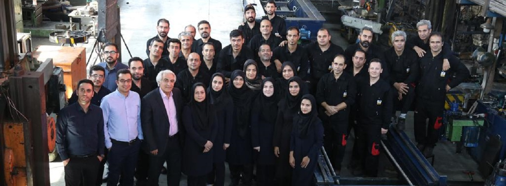

History of Max special tools
Max special tools Company started its activity in 1989 by designing and manufacturing electric Magnets that were produced for the first time in Iran and succeeded in producing and supplying all kinds of electric magnets without the use of technology or the help of foreign companies. Since 1992, by designing and manufacturing special production machines, he expanded his scope of activity to the automobile industry (manufacturing automobile parts). In 2003, with the call of Toka Steel Company for the development project of Mobarakeh Steel Foundry in Isfahan, it started its activity in the manufacture of special mobile machine tools and machining on site without moving parts or machines, and continued its scope of activity to other steel companies - power plants. - Mines, wood, paper, etc. expanded. The technology of this field of work is also completely indigenous and the engineers and specialists of this company have succeeded in establishing this field of work in Iran without taking help from foreign companies and relying only on their own expertise and experience. This knowledge-based company, now with more than 34 years of experience in the field of machine building and manufacturing of electric magnets and 21 years of activity in the field of on-site machining, by performing more than 1000 on-site machining operations inside and outside the country and having approx. 80 mobile machine tools is the first and largest on-site machining company in the Middle East and one of the top 15 on-site machining companies in the world.